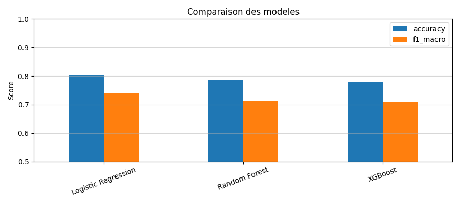

Salut Mehdi ! 👋
Ce document t'explique ton TP2 (Churn) de manière super simple. On va regarder ensemble tes résultats en pointant ce qui compte !
1. C'est quoi le "Churn" ? 🤔
Imagine : tu es le patron d'Orange ou SFR. Chaque mois, des clients résilient leur abonnement pour aller chez un concurrent. Ça s'appelle le Churn.
Le problème c'est que ça coûte 5 à 7 fois plus cher d'aller chercher un nouveau client que de garder un client existant. Donc l'idée c'est : "Et si mon algorithme pouvait me prévenir AVANT qu'un client parte, pour que je lui envoie une offre de fidélisation ?"
💡 C'est exactement ce que font les vrais opérateurs ! Quand tu reçois un SMS "Offre spéciale -30% sur votre forfait"... c'est probablement parce qu'un algo t'a identifié comme "à risque de départ" !
2. Tes données : 7 000 vrais clients IBM 📊
Contrairement au TP1 (les 150 fleurs d'Iris), ici on bosse sur des données réelles d'un opérateur télécom.
| Info | Valeur |
|---|---|
| Nombre de clients | 7 032 (après nettoyage) |
| Nombre de variables | 30 features (après encodage) |
| Clients restés | ~74% |
| Clients partis (Churn) | ~26% |
⚠️ Regarde bien les cases clignotantes : 74% vs 26%, c'est ce qu'on appelle un dataset DÉSÉQUILIBRÉ. C'est la grosse différence avec ton TP1 (50/50/50). Si l'algo dit toujours "il reste", il aurait 74% d'accuracy en ne comprenant rien du tout ! C'est pour ça qu'on utilise le F1-macro au lieu de l'Accuracy seule.
3. Le combat des 3 modèles 🥊
| Modèle | Accuracy | F1-macro |
|---|---|---|
| Régression Logistique | 80.4% | 0.739 🏆 |
| Random Forest | 78.8% | 0.712 |
| XGBoost | 77.8% | 0.709 |

🤯 SURPRISE : Le modèle le plus SIMPLE (la Régression Logistique) a gagné ! Les modèles compliqués comme XGBoost brillent sur des données très complexes. Mais sur nos données plutôt linéaires, le modèle basique fait mieux. Retiens ça : plus complexe ≠ forcément meilleur !
4. La Matrice de Confusion (les erreurs) 🎯

📖 Comment lire cette matrice :
• Haut-gauche (bleu foncé) = clients correctement prédits comme "restants". ✅
• Bas-droite = clients correctement identifiés comme "partants". ✅ C'est ce qu'on optimise !
• Bas-gauche (FAUX NÉGATIFS) = l'algo dit "il reste" mais il est parti. Coût maximal : perte de revenus !
• Haut-droite (FAUX POSITIFS) = l'algo dit "il part" mais il serait resté. Moins grave : on lui envoie une promo inutilement.
• Haut-gauche (bleu foncé) = clients correctement prédits comme "restants". ✅
• Bas-droite = clients correctement identifiés comme "partants". ✅ C'est ce qu'on optimise !
• Bas-gauche (FAUX NÉGATIFS) = l'algo dit "il reste" mais il est parti. Coût maximal : perte de revenus !
• Haut-droite (FAUX POSITIFS) = l'algo dit "il part" mais il serait resté. Moins grave : on lui envoie une promo inutilement.
5. SHAP : Pourquoi les clients partent-ils ? 🔍

🌟 Les 3 champions de la prédiction :
1️⃣ Contract (mensuel) : Un contrat sans engagement = liberté de partir à tout moment.
2️⃣ Tenure (ancienneté) : Un client récent part plus facilement qu'un client fidèle depuis 5 ans.
3️⃣ MonthlyCharges : Plus la facture est élevée, plus le client cherche moins cher ailleurs.
Bonne nouvelle : ni le genre ni l'âge n'apparaissent dans le top → ton IA n'est pas discriminatoire ! 🎉
1️⃣ Contract (mensuel) : Un contrat sans engagement = liberté de partir à tout moment.
2️⃣ Tenure (ancienneté) : Un client récent part plus facilement qu'un client fidèle depuis 5 ans.
3️⃣ MonthlyCharges : Plus la facture est élevée, plus le client cherche moins cher ailleurs.
Bonne nouvelle : ni le genre ni l'âge n'apparaissent dans le top → ton IA n'est pas discriminatoire ! 🎉
6. L'AI Act : la loi européenne sur l'IA ⚖️
| Niveau | Exemple | Ton cas ? |
|---|---|---|
| 🚫 Inacceptable | Notation sociale (comme en Chine) | Non |
| 🔴 Haut risque | Refus de crédit, recrutement IA | Non |
| 🟡 Risque limité | Chatbots, profilage commercial | OUI ! |
| 🟢 Minimal | Filtre anti-spam, recommandation Netflix | Non |
⚖️ En résumé : Ton système fait du "profilage commercial" (identifier des clients à risque pour leur envoyer des promos). C'est du risque LIMITÉ mais ça implique quand même :
• Le client doit savoir qu'un algo l'a ciblé (transparence).
• Il peut refuser le profilage automatisé (droit d'opposition, Art. 22 RGPD).
• La CNIL surveille ces pratiques en France.
• Le client doit savoir qu'un algo l'a ciblé (transparence).
• Il peut refuser le profilage automatisé (droit d'opposition, Art. 22 RGPD).
• La CNIL surveille ces pratiques en France.
Tu as maintenant toutes les clés pour expliquer le TP2, Mehdi.
Le Churn, le F1-macro, SHAP et l'AI Act n'ont plus de secrets pour toi ! 🚀
Le Churn, le F1-macro, SHAP et l'AI Act n'ont plus de secrets pour toi ! 🚀